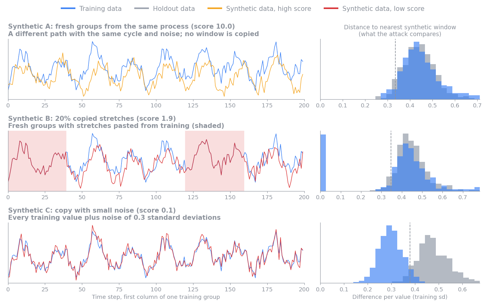
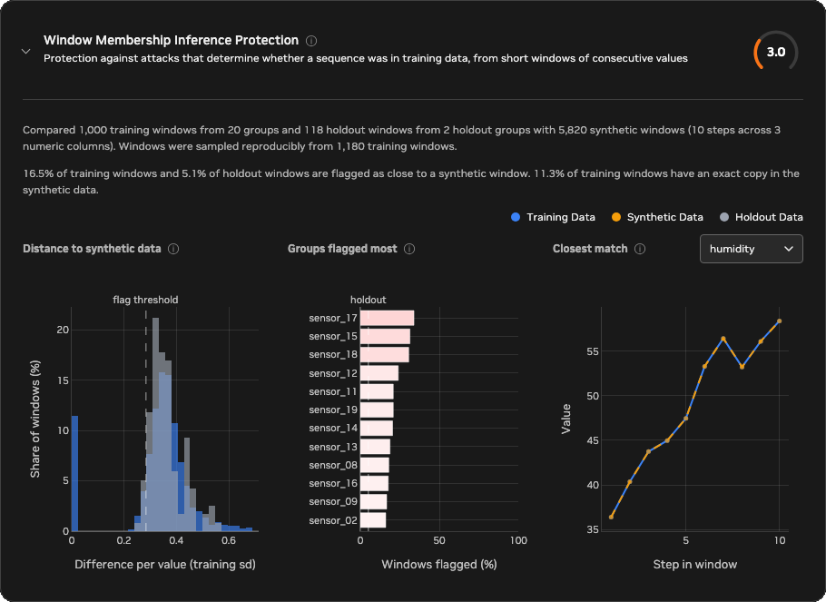
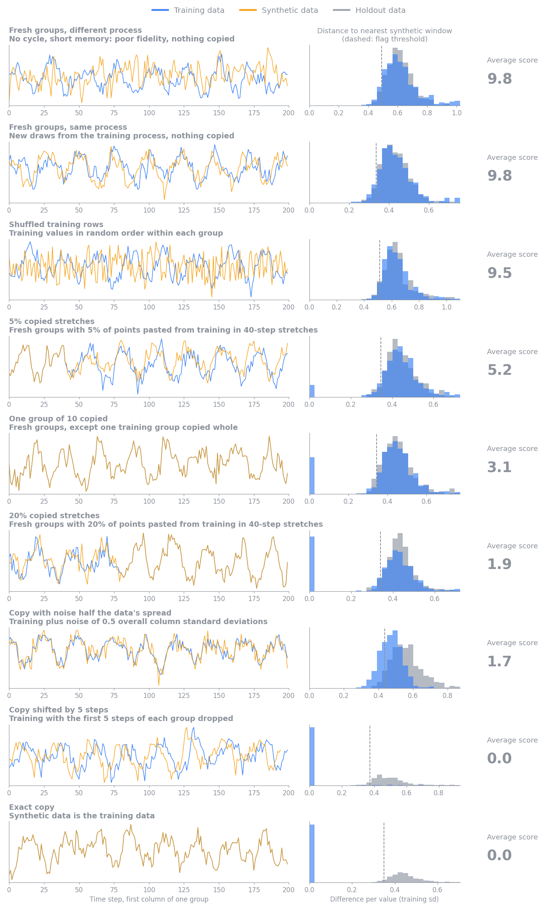
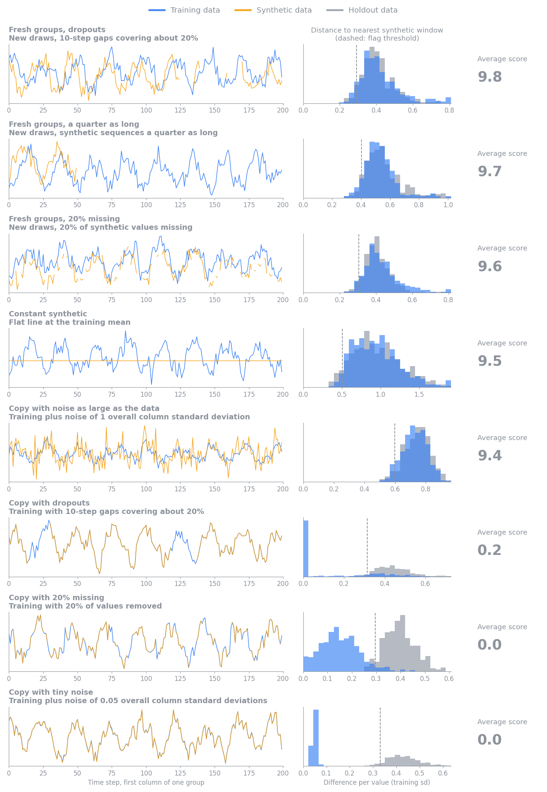

Window Membership Inference Protection¶
Window Membership Inference Protection is the time-series counterpart of
Membership Inference
Protection.
Both ask whether an attacker who holds a real record and the synthetic data can
tell if that record was used for training.
Membership Inference Protection attacks single rows. This metric attacks
windows, which are short stretches of consecutive values (10 steps by default)
taken from one group, such as one sensor or one patient, as set by
data.group_training_examples_by. It compares windows from the training groups
with windows from the holdout groups, which Safe Synthesizer set aside before
training, and checks whether training windows sit closer to the synthetic data.
If they do, the generator memorized stretches of its training sequences, even
when no single row stands out.
An exact copy of the training data is therefore the worst case. Every training window has a twin in the synthetic data and no holdout window does, so an attacker can tell members from non-members perfectly.
The figure below shows one training group against three synthetic datasets. The right column shows how close each training window (blue) and each holdout window (gray) comes to its nearest synthetic window. Windows left of the dashed line are flagged as suspiciously close.

- Synthetic A is new data from the same process. Training and holdout windows are equally close to it, so the histograms overlap and it scores 10.0.
- Synthetic B is new data with 20% of its points pasted from training, shaded in the plot. The pasted windows sit at distance 0, so it scores 1.9.
- Synthetic C is the training data with a little noise added. No window is an exact copy, but every training window has a close twin that holdout windows lack, so it scores 0.1.
Reading the score¶
The score runs from 0 to 10, and higher means stronger protection. A score near 10 means training windows are no closer to the synthetic data than holdout windows, after allowing for chance. The more of the training data the synthetic data copies, the lower the score. A score of 0 means every training window is flagged, as with a full copy of the training data.
Exact copies lower the score whenever a larger share of training windows than holdout windows has an exact match in the synthetic data. Continuous values almost never repeat exactly by chance, so the metric never discounts an exact copy as noise, even when the holdout is small.
With about 200 points per group and 10 holdout groups, scores fall into rough tiers, taken from the example scenarios:
- About 8 to 10 means nothing is copied, as with fresh groups (about 9.8), shuffled training rows (about 9.5), or a constant series (about 9.5).
- About 4 to 8 means a small share is copied, as with 5% of points pasted from training (about 5.2).
- About 1 to 4 means a large share is copied or closely imitated, as with one whole group out of 10 (about 3.1), 20% of points (about 1.9), or every group with noise of half a standard deviation (about 1.7).
- About 0 to 1 means the synthetic data reproduces the training data, exactly, with tiny noise, shifted by a few steps, or with values missing (about 0.0 to 0.2).
Use these tiers as a guide. How much copying is acceptable depends on the use case. Data shared outside an organization may need no detectable copying, while data used only for internal testing may tolerate some.
The score measures copying only. Poor synthetic data, even a constant series,
scores high as long as it copies nothing. Read it alongside the
Synthetic Quality Score and the time-series fidelity metrics. Compare scores
across runs only when the columns, groups, holdout, and window_size are the
same.
Reading the report charts¶
The card is in the Protection Metrics panel of the Data Privacy section of the HTML evaluation report, right after Membership Inference Protection. Expand it to see the charts, and select the info icon next to a chart title for a short reminder of how to read it. The score is reported on its own and is not part of the Data Privacy Score.

This example has 20 training sensors and 2 holdout sensors, each with three
numeric columns of 300 hourly points. Each synthetic sensor is new data, except
that a share of its points is pasted from the matching training sensor in
20-step stretches. The share rises from none for sensor_00 to 27% for
sensor_19.
The summary above the charts says what was compared and what the attack found. Here, 16.5% of training windows and 5.1% of holdout windows are flagged, and 11.3% of training windows have an exact copy in the synthetic data.
- Distance to synthetic data
- This chart shows how close each training window (blue) and holdout window (gray) comes to its nearest synthetic window, as the typical difference per value in training standard deviations. Windows left of the dashed line are flagged. In well-protected data the blue and gray bars overlap. Blue bars piled up at 0, or shifted left of the gray ones, mean training windows have close copies.
- In this example, a spike of blue bars at 0 is the 11.3% of training windows copied exactly. The remaining blue bars overlap the gray ones, so the windows that weren't copied are no closer than holdout windows.
- Groups flagged most
- This chart shows the share of each training group's windows that are flagged, for up to 12 groups, most-flagged first. The dashed line is the holdout flag rate, which is what chance alone produces. Bars turn redder the further they rise above it. Hover over a bar to see the group's share of exact copies.
- In this example,
sensor_17leads at 34%, followed bysensor_15at 31%. Both have about 21% exact copies and are among the sensors with the most pasted stretches. Some uncopied sensors, such assensor_02at 16%, also sit above the line. With only two holdout groups the line is a rough reference, so look for groups that stand clearly above the rest. - Closest match
- This chart shows the synthetic window (orange, dashed) closest to any training window, one numeric column at a time. If it is an exact copy, the training window (blue) is drawn on top of it. Otherwise the training window stays hidden, so the report never shows training values that the synthetic data doesn't already contain.
- In this example, the closest match is an exact copy, so the two lines coincide in every column.
When the score is available¶
The score needs:
- Grouped data, set by
data.group_training_examples_by. - Groups at least
window_sizepoints long. - At least 20 training windows and 20 holdout windows.
- At least two holdout groups.
When these aren't met, the card skips the score. If the holdout is what's missing, the card still shows the share of training windows with an exact copy in the synthetic data and the Closest match chart. These copy diagnostics need at least one complete window in both the training and the synthetic data.
Example scenarios¶
The figures below score a range of synthetic datasets, ordered from the highest average score to the lowest. Each dataset has 10 training, 10 holdout, and 10 synthetic groups of 200 points with two numeric columns, a 24-step cycle and a slowly wandering series. Copied stretches are 40 steps long, and noise is measured in training standard deviations. Each row shows one training group (blue) with its synthetic counterpart (orange), the distance histograms, and the average score across 200 random datasets.


Exact copies score about the same regardless of sequence length or holdout size. Blurred copies are judged against chance, so a smaller holdout makes them harder to see. A copy with noise of half a standard deviation averages about 1.7 with 10 holdout groups and 2.3 with 2, and single runs vary more.
Configuration¶
Time-series evaluation runs by default whenever time_series.is_timeseries is
true. Set evaluation.time_series.enabled: false to skip all time-series
metrics.
data:
group_training_examples_by: sensor_id
holdout: 0.05
time_series:
is_timeseries: true
timestamp_column: timestamp
evaluation:
time_series:
enabled: null # null follows time_series.is_timeseries
window_group_mia:
value_columns: null
window_size: 10
max_windows: 1000
max_columns: 12
Values are ordered by time_series.timestamp_column and split into sequences by
data.group_training_examples_by.
- Leave
value_columnsasnullto combine the numeric training columns, up to a reproducible sample ofmax_columns. Set an explicit list to check selected columns, such as one sensitive column on its own. - Lower
window_sizeto find partial copies in short sequences, or raise it to find copies blurred by noise. - Lower
max_windowsto bound runtime, at the cost of a noisier score.
Limitations¶
- The metric runs one attack on numeric columns only. Transformed copies
(rescaled, shifted in level, or run backward), copied stretches shorter than
window_size, and copied categorical or text sequences are not detected. - Heavy noise hides copies. A copy blurred by noise as large as the data scores about 9.4, even though each synthetic value still correlates about 0.7 with the training value it came from.
- Partial-column copies are mostly missed, because the uncopied columns dominate
the distance. With one column copied exactly from every group, the score
averaged 6.6 with 2 columns, 9.2 with 6, and 9.5 with 12. Set
value_columnsto a sensitive column to check it on its own. - The holdout must come from the same source as the training data. With every holdout value shifted by 1.5 standard deviations, fresh synthetic data averaged 6.9, down from 9.8, and single runs went as low as 0.6.
Calculation¶
The metric first fills gaps in each numeric column of each group by linear
interpolation, holding the first and last observed values beyond the ends. It
then cuts every group into windows of \(w\) consecutive values (window_size),
flattened across the \(c\) evaluated columns into \(D = w \cdot c\) values, and
never crosses group boundaries. Training and holdout windows use a stride of
\(s = \lfloor w/2 \rfloor\) steps. Synthetic windows use a stride of 1, so a copy
shifted off the training stride is still found. When a split has more windows
than its cap, a reproducible sample is drawn uniformly from all of its windows,
so longer groups contribute more. The cap is max_windows for training and
holdout windows and 50,000 for synthetic windows. Each column is standardized
separately at each step of the window, by the mean and standard deviation of
that value over the sampled training windows.
For every training and holdout window, the metric finds its nearest synthetic window by Euclidean distance \(d\). The report charts show \(d / \sqrt{D}\), the typical difference per value. The flag threshold \(\tau\) is the 5% quantile of the holdout distances, so about 5% of holdout windows are flagged by construction. With \(k_T\) of \(n_T\) training windows and \(k_H\) of \(n_H\) holdout windows at or below \(\tau\), the privacy loss is the log ratio of the two flag rates, with half a window added to each count so it stays finite:
If the synthetic data favors no group, both rates are about 5% and \(L\) is near 0. If every training window is flagged, \(L\) is about \(\ln 20 \approx 3\).
Two sources of chance make \(L\) positive even without memorization, and the metric estimates both:
- Binomial noise. The flag counts are random, so \(L\) varies by [ \sigma_B^2 = \frac{w}{s} \left( \frac{1}{k_T + \tfrac{1}{2}} - \frac{1}{n_T + 1} + \frac{1}{k_H + \tfrac{1}{2}} - \frac{1}{n_H + 1} \right), ] the usual variance of a log ratio of two rates, multiplied by \(w / s\), the number of training or holdout windows that contain each point. Windows that share points have correlated flags. The factor is a heuristic. It is exact only if flags are fully correlated within blocks of \(w / s\) windows and independent across blocks.
- Holdout offset. The holdout groups can sit closer to or farther from the synthetic data than the training groups for reasons unrelated to copying, which the binomial noise misses and which matters most with one or two holdout groups. The metric splits the training groups in half six times, with a fixed seed. One half plays the training data and the other half the synthetic data, and the attack runs against the real holdout. Nothing is copied in these splits, so the average of \(L^2 - \sigma_B^2\) across them, floored at 0, measures the holdout's own offset, \(\sigma_O^2\). The synthetic data never enters this estimate, so copying can't inflate it.
The expected chance contribution is removed before taking the square root, as in the other time-series metrics:
Exact copies are the exception, because chance almost never explains them. With \(x\) the share of training windows at distance 0, minus the share of holdout windows at distance 0 (which covers data with repeated stretches, such as a sensor stuck at one value), and \(\alpha = (k_H + \tfrac{1}{2}) / (n_H + 1)\) the holdout flag rate, the loss from exact copies alone is
the privacy loss if those windows were certainly flagged and the rest were flagged at the holdout rate. The score uses whichever loss is larger:
Before the chance correction, \(e^{-L}\) is the holdout flag rate divided by the training flag rate. It is 1 when the two rates match and falls to about \(\alpha\) when every training window is flagged. The rescaling maps these to 10 and 0. An exact copy of every training window gives \(L_{\text{exact}} = \ln(1 / \alpha)\), so it also scores 0. Scores are clipped to the range 0 to 10.